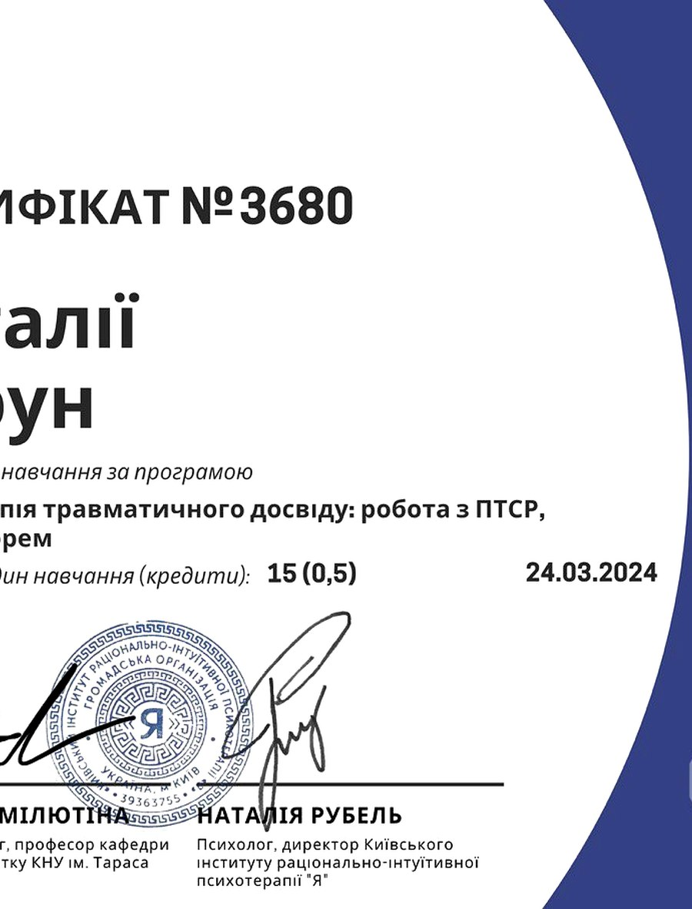

Психологиня · Гештальт-терапія для жінок
Ти давно тримаєшся сама.
Зовні — усе під контролем. Всередині — втома, яка нікуди не зникає, і відчуття, що ти давно не була собою.
Зовні — усе під контролем. Всередині — втома, яка нікуди не зникає, і відчуття, що ти давно не була собою.
Якщо останнім часом ви більше виживаєте, ніж по-справжньому живете, можливо, настав час повернутися до себе.
Я створюю простір, де можна зупинитися, почути свої почуття й потреби, побути собою — без оцінки, без тиску та без необхідності бути «ідеальною».
Мої клієнтки можуть скористатися частковою компенсацією вартості психотерапії від медичних страхових компаній Чехії.
Компенсацію надають: VZP (111) · ČPZP (205) · OZP (207) · ZP Škoda (209) · ZPMV (211) · RBP (213)
Кожна страхова виділяє кошти на 10 зустрічей, суми відрізняються. Напишіть мені — допоможу розібратися з умовами вашої програми.
Написати про страхову
Я гештальт-терапевтка. Поруч зі мною жінки знаходять внутрішню опору, повертають довіру до себе й відчуття власної цінності — проходять через кризи, складні стосунки й життєві зміни.
З 2022 року живу і працюю в Чехії. Чотири роки працювала в Національному інституті психічного здоров'я (NUDZ) у проєкті підтримки українців.
Якщо відчуваєте, що настав час повернутися до себе, я буду поруч. Напишіть мені — і ми разом знайдемо наступний крок.
Написати Наталії Приєднатися до KVITKA space